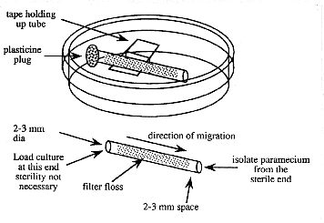

CHAPTER 3 - EMBRYONIC AND LARVAL CULTURE
(Source: B. Trevarrow)
Contamination is a recurrent problem with paramecia cultures. Here is a simple technique that allows the isolation of paramecia or other motile micro-organisms from non-motile or more slowly moving organisms that may contaminate the culture.
1. Prepare a number of small diameter glass tubes (about 5 cm long and 2-3 mm inside diameter) that are filled with loosely compacted glass floss. The floss should be inserted 3-5 mm in from each end (see below). To insert it, cut a strip about 2-3 mm wide and about 5 cm long and draw through the tube with a wire hook or tubing with a notch in it.
Figure 2. Device for purifying paramecia

2. Sterilize the tubes.
3. Suspend a sterile floss-containing tube in a sterile 60 mm petri plate with a piece of tape. The tape does not need to be sterile. Avoid touching the ends of the tube.
4. Using a sterile pipette tip, add sterile 10% Hanks to one end of the tube. Leave space (about 2-3 mm) in the end of the tube for the addition of the impure paramecia culture .
5. Add a droplet of the impure paramecia culture to the same end of the tube filling the 2-3 mm space.
6. Occlude the culture-containing end of the tube with a small piece of modeling clay (e.g. Plasticine).
7. Wait a few hours and the paramecia will appear at the open end of the tube where they are observable with a dissecting microscope and can be isolated with a sterile pipet tip. Do not wait too long or other slower moving organisms may catch up.
8. Add the isolated paramecia to a sterile culture and no other organisms should be present.
The Zebrafish Book